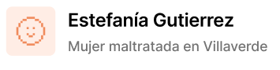
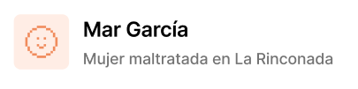

“Gracias por toda vuestra ayuda. Eternamente agradecida.”
Su pareja no la insultaba en público, pero le revisaba el móvil, decidía en qué gastaba y le “prestaba” dinero que luego usaba para chantajearla. Estefanía empezó a anotar en una libreta cada control y cada humillación. Una amiga le habló de un punto violeta del barrio y pidió asesoramiento legal y psicológico. Con apoyo, bloqueó accesos a sus cuentas, recuperó su nómina a su propio banco y puso una denuncia. Obtuvo una orden de protección y, poco a poco, volvió a estudiar. Hoy participa en talleres donde enseña a reconocer el control coercitivo.
“Gracias a los profesionales de Vidas Libres por hacer esto posible.”

Tenía 19 años cuando su chico empezó con bromas “sobre su ropa”, luego llegaron los celos y el aislamiento: dejó de ver a su equipo de voleibol. Una profe detectó señales y le ofreció ir juntas a una asociación local. Aprendió a identificar la violencia psicológica, diseñó un plan de seguridad (copias de documentos, contacto de emergencia, ruta para salir de casa). Terminó la relación con acompañamiento y cambió de piso compartido. Volvió al voleibol y ahora coordina un grupo joven que trabaja en relaciones sanas y consentimiento.
“Vidas Libres me ha salvado la vida, creo que nunca he sentido tanta felicidad después de la tormenta que pasé.”
Migró con un contrato temporal; su pareja aprovechó su falta de red y la dependencia del alquiler. Cada discusión terminaba con amenazas de echarla “a la calle”. En el centro cívico conoció un servicio de mediación y asesoría laboral; allí armó su red: abogada, psicóloga y una compañera de piso solidaria. Negoció el fin del contrato de alquiler a su nombre, buscó trabajo con apoyo y denunció los hechos. Hoy comparte piso con amigas y colabora en campañas sobre autonomía económica y vivienda para salir del maltrato.